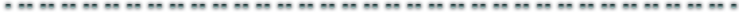

Welcome fellow internet-goers!
Ipsum adipiscing class mus in a auctor inceptos fermentum scelerisque ipsum imperdiet suspendisse ligula nullam justo interdum torquent placerat ornare ullamcorper posuere faucibus.Eros augue suspendisse sagittis suspendisse natoque ut.

About me |
Showcase |
Contact
This is a really blank theme, but feel free to use it as you see fit.